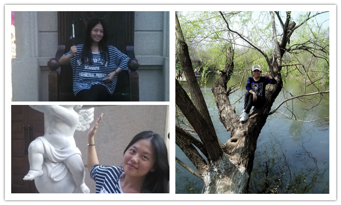
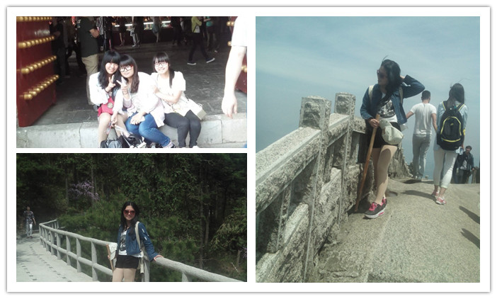
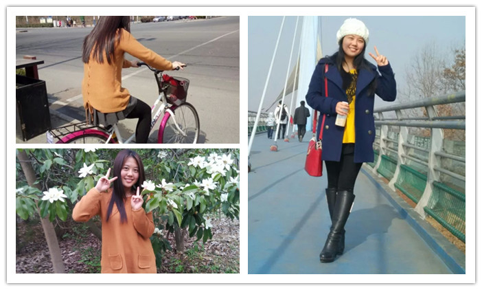
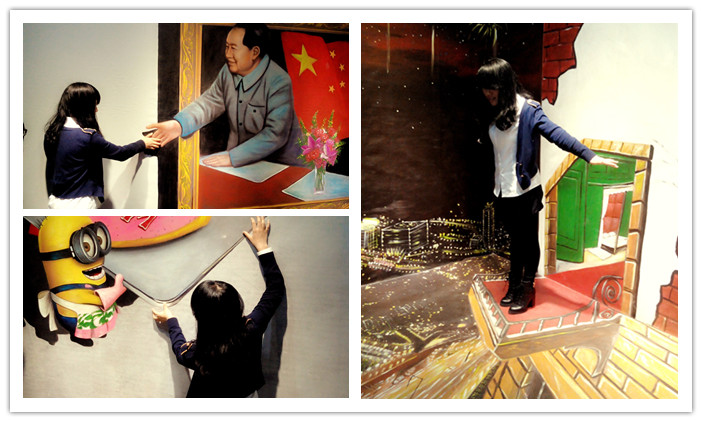
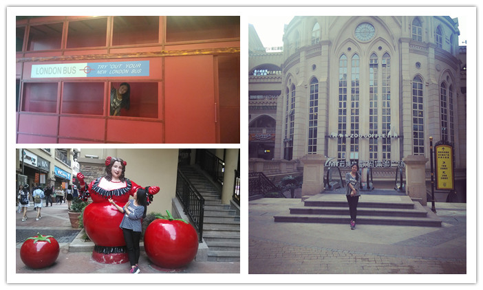
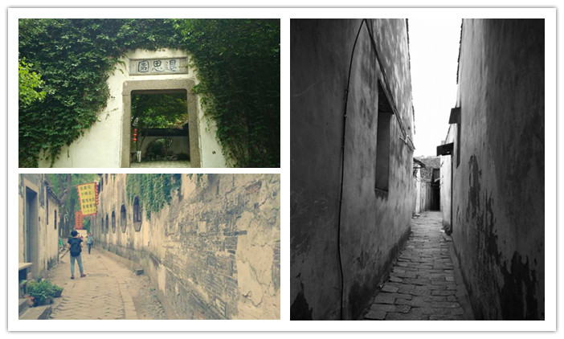
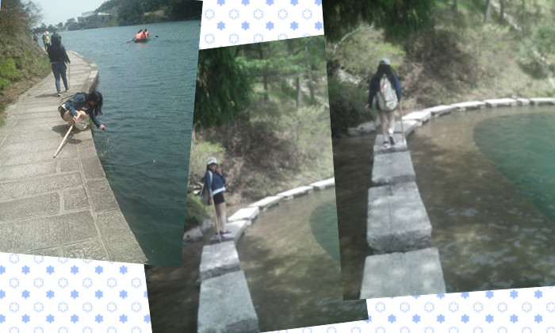

-

每个人在他的人生发轫之初，总有一段时光，没有什么可留恋，只有抑制不住的梦想，没有什么可凭仗，只有他的好身体，没有地方可去，只想到处流浪。
-

很多事情就像是旅行一样，当你做出决定并迈出第一步的时候，最困难的那部分其实就已经完成了。
-

人生就像一场旅行，不必在乎目的地，在乎的是沿途的风景以及看风景的心情，让心灵去旅行!
-

问:为什么喜欢爬山？答:因为山在那。或许旅行一样，因为路在那。
-

旅行是为了离开，旅行是对庸常生活的一次越狱。
-

时代依旧负重前行，而你我已凌波微步。
-

旅行是消除仇恨和无知的最好方法。